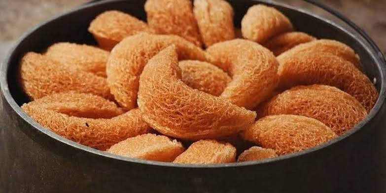

Resep Tradisional Aceh
Kue Keukarah
Kue renyah berbentuk spiral warisan leluhur Aceh — dibuat dari tepung beras dan santan, disajikan di setiap momen perayaan hari raya dan kenduri adat.

Alat & Bahan
Peralatan
- Wajan atau kuali dalam
- Cetakan keukarah (cetakan rosette besi berlubang)
- Mangkuk besar untuk adonan
- Mixer atau kocokan telur
- Termometer minyak (opsional)
- Saringan atau serok goreng
- Kertas minyak untuk meniriskan
Bahan Utama
- 250 gr tepung beras, diayak
- 50 gr tepung tapioka
- 3 butir telur ayam, suhu ruang
- 150 gr gula pasir
- 200 ml santan kental (dari 1 butir kelapa segar)
- 1/2 sdt garam
- 1/2 sdt vanili bubuk
Bahan Pelengkap
- 2 lembar daun pandan, ikat simpul
- 2 sdm wijen putih (opsional)
- Minyak goreng secukupnya (untuk deep fry)
Cara Membuat
-
1
Siapkan Santan Pandan
Panaskan santan kental bersama daun pandan di atas api kecil sambil terus diaduk hingga harum. Jangan biarkan mendidih agar santan tidak pecah. Angkat, buang pandan, dan biarkan hingga benar-benar dingin.
-
2
Kocok Telur & Gula
Kocok telur dan gula pasir menggunakan mixer selama 5–7 menit hingga adonan berwarna pucat, mengembang, dan mencapai ribbon stage — saat diangkat, adonan jatuh membentuk pita yang perlahan.
-
3
Campur Adonan
Ayak tepung beras, tepung tapioka, garam, dan vanili. Masukkan ke adonan telur sedikit demi sedikit bergantian dengan santan dingin. Aduk perlahan dengan spatula — konsistensi adonan harus seperti crepe yang encer namun tidak terlalu cair. Tambahkan wijen jika menggunakan.
-
4
Panaskan Minyak & Cetakan
Tuangkan minyak ke wajan (minimal 5 cm). Panaskan hingga 170–180°C. Celupkan cetakan ke dalam minyak panas selama 1–2 menit agar cetakan ikut panas — langkah ini krusial agar adonan bisa menempel dan terlepas dengan sempurna.
-
5
Cetak & Goreng
Angkat cetakan, celupkan 3/4 bagian ke adonan selama 3–5 detik. Masukkan ke minyak panas dan goyangkan hingga kue terlepas sendiri. Goreng 2–3 menit hingga kuning keemasan. Angkat dan tiriskan. Ulangi untuk adonan berikutnya.
-
6
Dinginkan & Sajikan
Biarkan keukarah dingin sepenuhnya sebelum disimpan ke dalam toples kedap udara agar tetap renyah. Sajikan sebagai hidangan tamu atau kemas sebagai oleh-oleh khas Aceh.